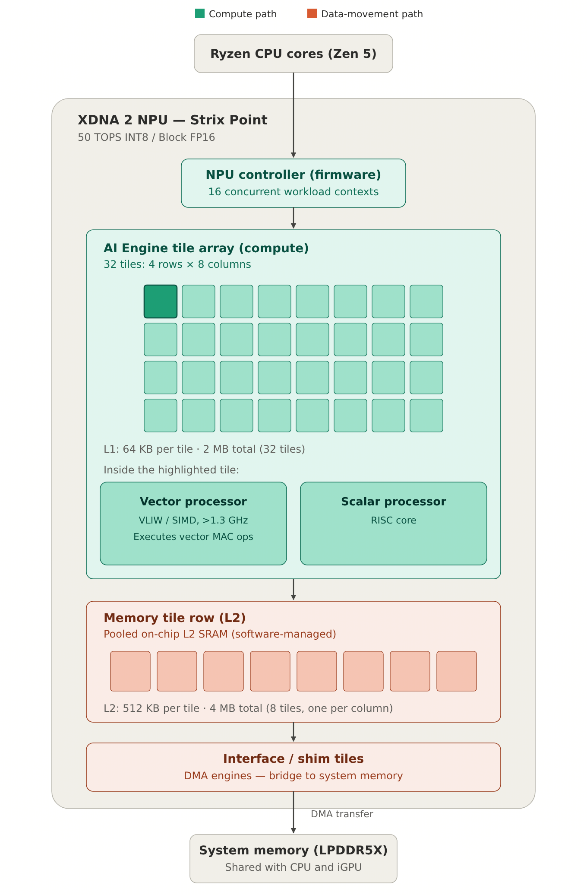
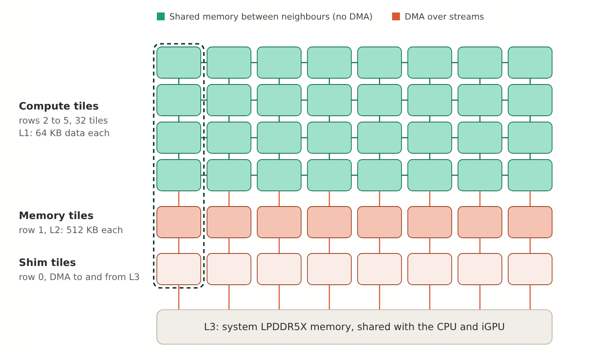
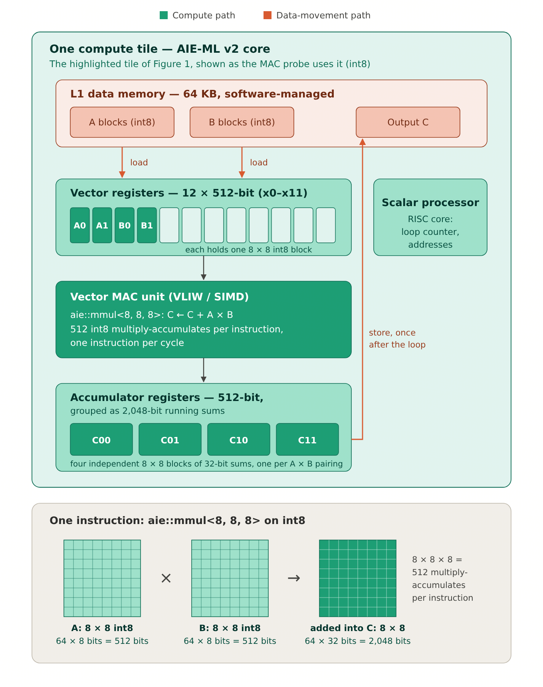
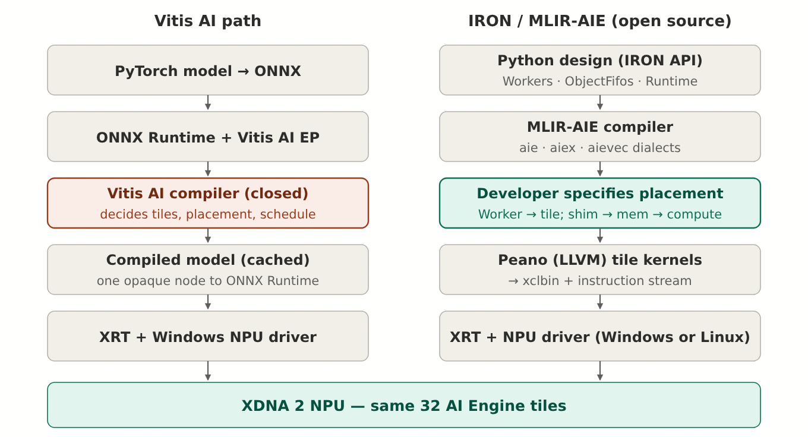
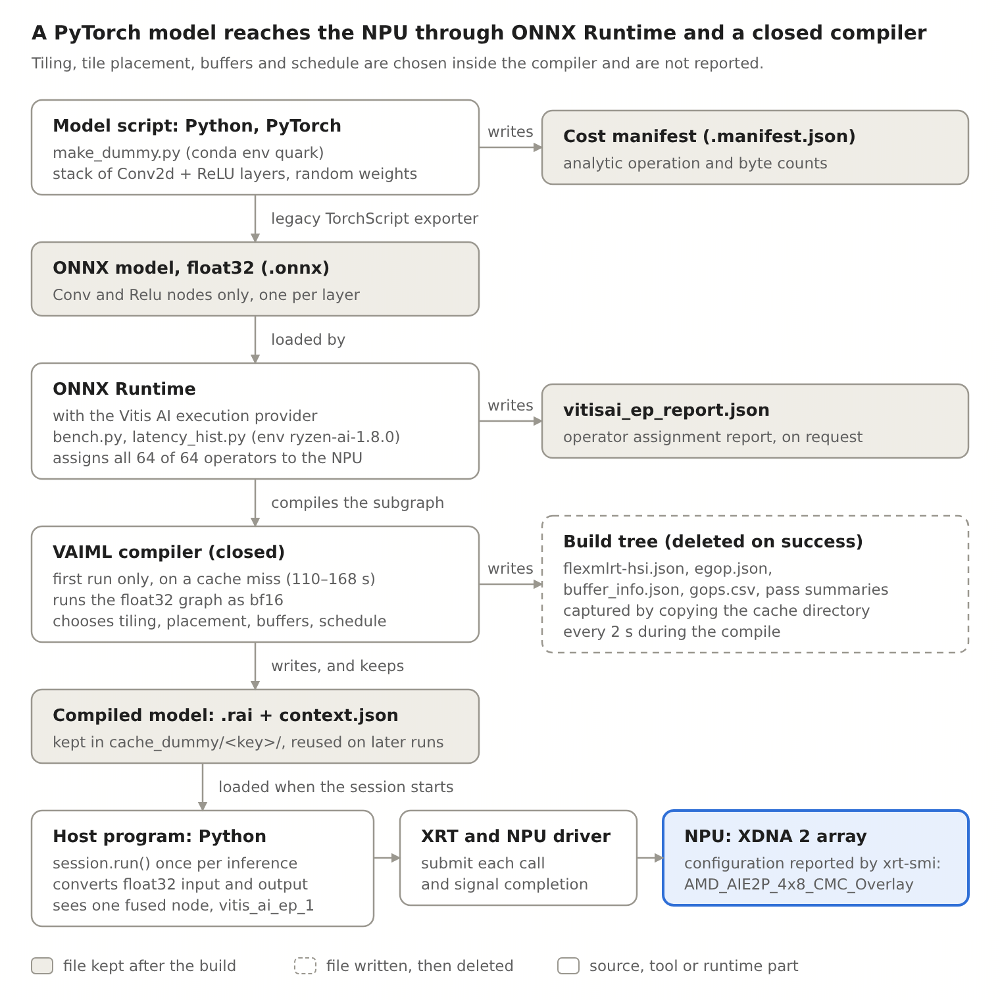
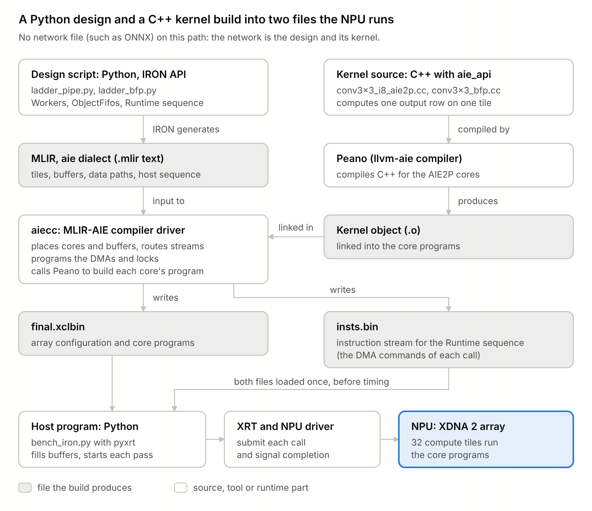
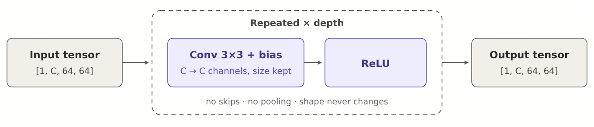
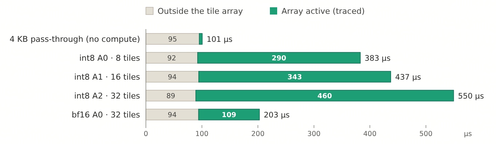
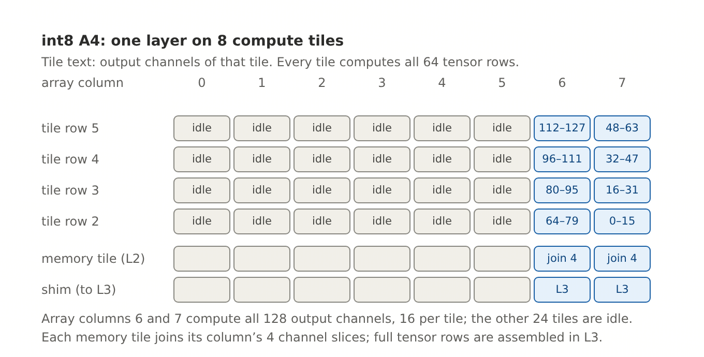
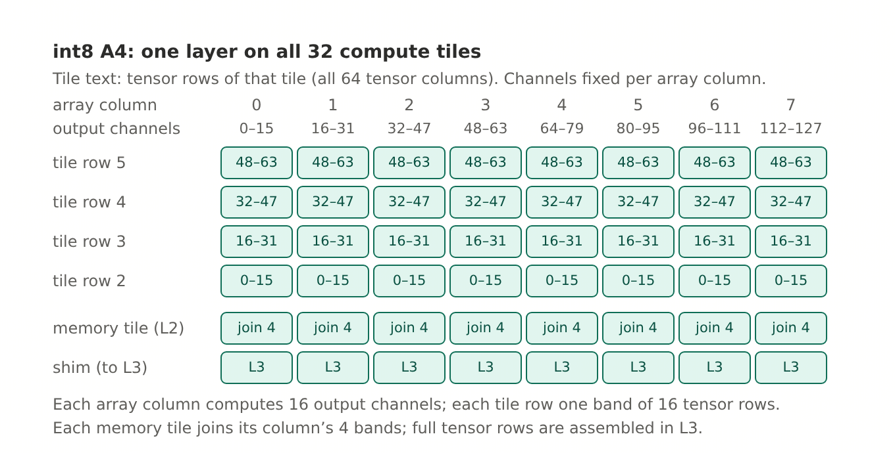

Getting the TOPS: AMD XDNA 2 NPU on a Windows laptop, Vitis AI vs IRON
Date: , Version: 3.2 (DRAFT), Last edit time: 23:25 AEDT, 4 October
Author: Denis Ryndine: research design, experiment direction, measurements, interpretation
Assistant: Claude (Anthropic), model claude-opus-5-5: code and kernel implementation, data analysis, drafting and review, under the author's direction
Abstract
This is an experimental technical report: it records measurements made on one laptop with synthetic networks, and what they show and do not show. On a Windows laptop's AMD XDNA 2 neural processing unit (NPU), AMD's Vitis AI path (Ryzen AI Software, which AMD calls its mainstream tooling for inference on this NPU) used only 3–12% of the 50 TOPS (tera-operations per second) rating on simple synthetic convolution nets. Hand-written designs on AMD's open IRON toolchain reached 24% in a comparable 16-bit format and up to 60% in int8 (8-bit integer). The hardware can therefore deliver far more than the Vitis AI path achieved in this experiment, and the open toolchain gives a route to it. In the IRON designs, the largest gains came from spreading each layer over all 32 compute tiles and from making fewer calls to the NPU per inference, while cutting the programmed main-memory traffic of the widest network by 61% made it only about 3% faster.
All utilisation percentages (shares of the 50 TOPS rating) are on total time per inference, with nothing subtracted. The IRON kernels and tile mappings were written with an AI coding assistant (Claude Code) under the author's direction; AMD's own agentic-programming skills for IRON were not used.
Contents
Page numbers refer to the PDF version of this report.
1. Introduction
1.1 The question
AMD rates the NPU in the Ryzen AI 9 HX PRO 370 at 50 TOPS. This report asks how much of that rating a convolutional network can obtain in practice on this laptop, and what decides the answer. It measures the same networks through two AMD toolchains: Vitis AI, which takes a trained model and compiles it automatically, and IRON, which leaves kernels and placement on the hardware to the developer.
1.2 Why synthetic networks
Real models mix many kinds of layer, branch, and change shape from layer to layer, so a shortfall is hard to assign. The networks here are built so that no known source of inefficiency remains: only 3 × 3 convolutions, no branches, no change of shape, and sizes chosen around the NPU's on-chip memory (four that fit and one that does not). Any remaining gap between measured and rated throughput then belongs to the hardware or to the toolchain. Their structure is described in section 4.
1.3 How to read this report
Fact, Observed, Inferred. Fact means stated in AMD documentation or another cited source. Observed means measured or seen in this study's own runs and output files. Inferred means concluded from observations without a direct measurement. Statements are labelled where the kind is not obvious, and inferences are kept apart from findings.
Number formats. int8 is 8-bit integer. bf16 (brain floating point, 16-bit) is the 16-bit format of the Vitis AI path and of native bf16 multiplies. bfp16 is the block floating-point format used by the IRON designs (bfp16ebs8, section 2.4).
Operations and TOPS. One multiply-accumulate (MAC) counts as two operations. TOPS is tera-operations (10¹² operations) per second. Utilisation is achieved TOPS as a percentage of the 50 TOPS rating.
Time. ms is milliseconds and µs microseconds. A "call" is one command from the host to the NPU; an "inference" is one complete pass of a network over one input. Other terms are defined in Appendix A.
2. Hardware
2.1 Architecture
The laptop is a Lenovo ThinkPad with an AMD Ryzen AI 9 HX PRO 370 (Strix Point), running Windows 11 Pro. Its NPU, XDNA 2, sits beside the CPU and shares the laptop's main memory with it.

NPU controller. Firmware that receives commands from the host and starts work on the array.
Compute tiles. 32 tiles in 4 rows of 8 columns. Each has a vector processor that performs the arithmetic, a scalar processor that runs loop counters and address calculation, and 64 KB of local data memory (L1). L1 totals 2 MB.
Memory tiles. One per column, 512 KB each (L2), 4 MB in total, managed by software.
Interface tiles. One per column, at the array edge. Their direct memory access (DMA) engines move data between the array and the laptop's main memory (L3, called DDR in this report; LPDDR5X, shared with the CPU and integrated GPU).
In the addressing used by the IRON toolchain, the array is 8 columns × 6 rows: an interface tile, a memory tile and four compute tiles per column. IRON and AMD's AI Engine tools call the interface tile a shim tile, which is why Figure 1 labels that row "Interface / shim tiles"; this report uses "shim tile" from section 3 on. Figure 2 shows the array as IRON addresses it.

2.2 Clock rate
Published (Fact). AMD gives the AI Engine clock as above 1.3 GHz ([i], which states it for the XDNA architecture in general rather than for XDNA 2 specifically).
Implied by the rating (Inferred). If every one of the 32 tiles issues 512 MACs per cycle, 50 TOPS corresponds to 50 × 10¹² ÷ (32 × 512 × 2) ≈ 1.53 GHz.
Measured (Observed). 1.811 GHz at NPU Power Mode Performance and 1.402 GHz at Default. A test kernel runs a loop of known cycle count on one tile at two loop lengths; the clock is the difference in cycles divided by the difference in host time, which removes the fixed cost of the call. The cycles per loop iteration come from the tile's hardware trace, so the measurement assumes that the trace timer runs on the core clock. AMD's own validation test (below) reports 222.0 cycles in 122.7 ns, which is 1.809 GHz.
All measurements in this report are at NPU Power Mode Performance, set with AMD's `xrt-smi` tool. This is separate from the Windows power scheme, which was Balanced (section 5.4).
2.3 Reference rates

The rates below run from the instruction issue limit of one tile to what was measured. Each whole-array figure is MACs per cycle per tile × 32 tiles × 2 operations × 1.811 GHz.
| Reference | Whole-array rate (TOPS) |
|---|---|
| Issue limit: one 8 × 8 × 8 instruction per cycle on every tile, 512 MACs per cycle per tile (Fact for the 8 × 8 × 8 int8 instruction, [ii]; Observed for one instruction per cycle and for the clock) | 59.3 |
AMD's validation test, xrt-smi validate, int8 matrix multiply, run on this laptop (Observed) | 51.3 |
| AMD's rating, int8 (Fact, [iii]) | 50 |
| This study's probe loop on every tile, int8, operands read from L1: 338 MACs per cycle per tile (Observed) | 39.2 |
| The same probe loop in bfp16: 274 MACs per cycle per tile (Observed) | 31.8 |
| Native bf16 multiplies: about 20–30 MACs per cycle per tile (Observed) | about 3.4 |
AMD's 50 TOPS rating is a specification, not a benchmark (the calculation in section 2.2 is consistent with it: 512 MACs per cycle on all 32 tiles at about 1.53 GHz).
AMD's validation test is a precompiled int8 matrix multiply shipped with the NPU driver. It reports the time of its compute only, without moving data in or out, so it shows that the array can reach the rating on a dense matrix multiply but is not a time per inference. Spread over 32 tiles at 1.811 GHz, 51.3 TOPS is about 443 MACs per cycle per tile (Inferred: it assumes the test uses all 32 tiles).
The probe loop is a test kernel written for this study. It repeats 8 × 8 × 8 multiplies with every operand read from L1, the way a matrix-multiply kernel streams its data. It was run on one tile and, separately, on all 32 tiles at the same time; each tile gave the same rate both times (338 MACs per cycle in int8), so the whole-array figure is that rate on 32 tiles. It is not a limit of the hardware: it shows a rate a tile can at least sustain from L1, and a better loop does more, and this study's convolution kernel reaches 382 (section 7.1).
No bf16 rating is published and no bf16 or bfp16 peak was measured on this part, so all utilisation figures, including bf16 and bfp16, are stated against the int8 rating of 50 TOPS.
2.4 Number formats
| Format | How a value is stored | Multiply rate measured on one tile (MACs per cycle) |
|---|---|---|
| int8 | 8-bit integer | 338 (probe), 382 (this study's convolution kernel) |
| bf16 (native) | 16 bits: own 8-bit exponent and 7-bit mantissa | about 20–30 |
| bfp16 (block floating point, bfp16ebs8) | groups of 8 values share one 8-bit exponent; each value keeps an 8-bit mantissa | 274 (probe), 261 (this study's convolution kernel) |
A higher rate means more multiplies done per cycle, so the int8 convolution kernel (382) sustains more than the probe loop (338). The probe loads both operands from L1 for every instruction; the convolution kernel reuses each loaded block for several multiplies, which most likely explains the difference (Inferred). Both stay below the issue limit of 512.
Block floating point runs bf16-like data on the int8 multipliers, at about ten times the native bf16 rate. The cost is precision: a small value in a block with a large one loses its low bits (worked example in Appendix C). In this study's networks, bfp16 outputs differ from true bf16 by a median relative error of 2.3% at the shallowest net, rising to 6.3% at the deepest. AMD states that the XDNA 2 NPU delivers 50 TOPS and supports Block FP16 "without sacrificing performance", which makes block floating point AMD's intended 16-bit compute format on this part (Fact, [iv]).
3. Two paths to the same hardware
3.1 Overview
Vitis AI is the path of AMD's Ryzen AI Software: a model is exported to ONNX (Open Neural Network Exchange), run through ONNX Runtime with the Vitis AI execution provider, and compiled for the NPU by a closed AMD compiler. IRON is the Python interface of MLIR-AIE, AMD's open-source compiler toolchain for its AI Engine arrays (MLIR: Multi-Level Intermediate Representation) [v]. AMD describes IRON as a close-to-metal toolkit for performance engineers, designed to complement, not replace, the Ryzen AI Software (Fact, [vi]). Both paths end in the same 32 compute tiles and the same driver.

3.2 Build and run, stage by stage
Figures 5 and 6 show what each path produces before anything runs on the NPU.


3.3 What each path lets the developer control
| Decision | Vitis AI path | IRON path |
|---|---|---|
| Convolution kernel | Chosen by the compiler; no way to supply one was found | Written by the developer, in C++ |
| Placement of work on tiles | Chosen by the compiler | Written by the developer, tile by tile |
| Data movement between DDR, memory tiles and compute tiles | Chosen by the compiler | Declared by the developer as explicit data paths |
| Calls to the NPU per inference | One host call per inference | Chosen by the developer |
| Number format | bf16 or int8 graph; arithmetic inside the NPU not reported | int8 or bfp16, chosen in the kernel |
IRON has no step that maps a network onto tiles automatically. Every mapping in this report was written in this study.
3.4 What each path lets the developer see
On the Vitis AI path, everything below comes from the compiler's diagnostic files for the synthetic networks, the execution provider's partition report, and AMD's AI Analyzer profiling runs.
| Information | Vitis AI path | Where from |
|---|---|---|
| All operators run on the NPU, none on the CPU | Yes | Partition report (Observed) |
| How tensors are split into pieces for local memory (data tiling) | Yes | Compiler diagnostic file egop.json (Observed) |
| Kernel invocations: 288 per layer, about 1.05 million operations each | Yes | egop.json (Observed) |
| Planned DDR traffic per inference; spills; layers that touch DDR | Yes | Compiler diagnostic file flexmlrt-hsi.json and compile log (Observed) |
| Kernel time per inference, a few inferences, instrumented build | Yes | AI Analyzer (Observed) |
| Which tiles run which layer or part of a layer | No | Not in any file produced (Observed) |
| Order and timing of work across tiles | No | Not in any file produced (Observed) |
| Paths and timing of data movement | No | Not in any file produced (Observed) |
| Split of NPU time between compute, data movement and waiting | No | Not in any file produced (Observed) |
Tile activity at run time (aie_profile) | No | Documented by AMD for Versal parts (Fact, [vii]); the plugin is not shipped in the Windows NPU driver, and the setting was read but produced nothing (Observed) |
On the IRON path, every placement and data path is known because the developer wrote it, and each tile has a hardware trace unit that timestamps events such as a kernel starting or a DMA transfer finishing. Traced builds need extra on-chip routes, so trace was used in separate builds and not in the timed ones.
In short, the Vitis AI path reports how much work and traffic the compiled network plans, but not where on the array that work runs or how the time divides inside the NPU.
4. Test networks
4.1 Structure and the five variants

The input is a 64 × 64 × C tensor. Every layer is the same 3 × 3 convolution followed by ReLU, with no skips, no pooling and no change of shape.
| Variant | Channels (C) | Layers | Operations per layer (GOP) | Operations per inference (GOP) |
|---|---|---|---|---|
| A0 | 64 | 8 | 0.302 | 2.42 |
| A1 | 64 | 16 | 0.302 | 4.83 |
| A2 | 64 | 32 | 0.302 | 9.66 |
| A3 | 64 | 64 | 0.302 | 19.33 |
| A4 | 128 | 32 | 1.208 | 38.65 |
GOP is giga-operations (10⁹ operations); one MAC counts as two operations. Doubling the channels multiplies each layer's work by four, because a convolution's cost grows with input channels × output channels.
4.2 Why five variants
Within one network every layer is identical, which makes its operation count exact. A0 to A3 change only depth, from 8 to 64 layers: timed side by side, they separate the fixed cost of an inference from the cost per layer, which shows whether a larger network would hide the loss. Four points rather than three make one bad measurement visible. A4 doubles the channels instead, quadrupling the weights so that the network no longer fits the NPU's 6 MB of on-chip memory.
| Variant | Weights in bf16 (MB) | Weights plus two activation buffers, as planned when designing the networks (MB) |
|---|---|---|
| A0 | 0.56 | 1.56 |
| A1 | 1.13 | 2.13 |
| A2 | 2.25 | 3.25 |
| A3 | 4.51 | 5.51 |
| A4 | 9.01 | 11.01 |
The 6 MB on-chip capacity did not act as a limit on the Vitis AI path: A4 exceeded it and the compiler reported no spills (Observed). The compiler's traffic figures fit weights being streamed from main memory layer by layer, so that only one layer's weights and two activation buffers need be on chip at once, about 1.07 MB for A0–A3 and 2.28 MB for A4. These two figures were calculated in this study from that reading; they are not a tool output (Inferred).
5. Measurement method
5.1 Setup
All measurements were made by the author between September and October 2026, on one laptop and with the same driver for both paths.
| Item | Value |
|---|---|
| Laptop | Lenovo ThinkPad 21RVCTO1WW, AMD Ryzen AI 9 HX PRO 370 (Strix Point), Windows 11 Pro build 26200.9168 |
| NPU | XDNA 2, 8 columns × 6 rows: 32 compute tiles (64 KB local memory each), 8 memory tiles (512 KB each) and 8 interface (shim) tiles; clock 1.811 GHz at NPU Power Mode Performance and 1.402 GHz at Default (section 2.2) |
| Driver | NPU driver 32.0.20101.3760, NPU firmware 1.1.2.64, XRT (Xilinx Runtime) 2.21.0 as reported by xrt-smi; the same driver for both paths |
| Power mode | NPU: Power Mode Performance for every compile and measurement (xrt-smi configure --pmode performance), restored to Default afterwards. Windows: power scheme Balanced, with processor idle states enabled |
| Software, Vitis AI path | Ryzen AI Software 1.8.0; ONNX Runtime 1.27.0 (package onnxruntime-vitisai) with the Vitis AI execution provider; model export with PyTorch and AMD Quark 0.12, in a separate environment |
| Toolchain, IRON path | mlir-aie v1.4.3 (commit 95b3d1cc), IRON Python interface, Peano (llvm-aie) compiler, XRT software development kit 2.21.75, Python 3.13 |
XRT is the runtime installed with the NPU driver, and both paths run on it: the Vitis AI execution provider calls it beneath ONNX Runtime, and the IRON host code calls it directly. The XRT software development kit is what the IRON host code was built against.
5.2 What one timed inference contains
Time per inference is host wall-clock time.
| Part of the inference | Vitis AI path | IRON path |
|---|---|---|
| Timed call | One session.run() call in ONNX Runtime | A start and wait for each call to the NPU, then reading the final output back |
| Weights | Read from main memory on every inference; not kept on chip between inferences | Loaded from main memory by DMA on every call; not kept on chip between calls |
| Activations between layers | Kept on chip for 30 of 32 layers in A2 (compiler files) | Written to main memory and read back by the next layer |
| Host input and output | ONNX Runtime converts a 1 MiB float32 input and returns a new 1 MiB float32 output on every call | Already in the NPU's format before timing; nothing copied inside the timed call |
The float32 conversion inside the Vitis AI call happens once per inference, for the input on the way in and the output on the way out, not once per layer: the whole network runs on the NPU as one compiled node. It is estimated at about 0.05 ms per inference; it was not measured for these networks.
5.3 Sustained timing
Each network runs continuously for 60 s, and the steady median time per inference is used. On the Vitis AI path, latency rose over about the first 2.3 s of continuous running on the shallowest networks and then held at a slower level, up to about twice as slow, by a ratio that varied between sessions (Observed). A short benchmark of a fixed number of iterations therefore measures the faster opening period, not sustained performance. The same start-up detector is applied to both paths: the steady median is taken after the detected onset, or after 5 s where none is detected. On the IRON path no network showed this rise.
5.4 Sessions, repeatability and machine state
Each path was measured in three sessions; reported figures are the median of the three session medians. Between sessions, Vitis AI medians varied by 8.6–16.9% (coefficient of variation, standard deviation over mean) and IRON medians by 0.04–0.44%.
The IRON sessions followed this procedure; Appendix B gives the commands.
Nothing else uses the NPU. The Windows AI service (Windows AI Fabric Service, WSAIFabricSvc), which runs AI models on the NPU in the background, is disabled. Before and after every 60 s window a check confirms that no other process holds an NPU hardware context; a Windows image-generation component was found to take the NPU at times without warning.
Mains power, applications closed, and each session started within 15 minutes of a reboot.
Windows power scheme Balanced, with processor idle states enabled.
NPU Power Mode set to Performance with AMD's tool (
xrt-smi) before each run, and restored to Default after it.
A trial power scheme with processor idle states disabled removed most of the run-to-run spread in one-call runs (the 90th-percentile time fell to about 1.01 times the 10th-percentile time, from about 1.4 times) but made NPU work slower: int8 A0 took 62–65% longer, and one-call A4 never reached its usual fastest times. With processor idle states enabled, the same trial scheme matched Balanced within 1%. Balanced with idle states enabled was therefore kept. Why the processor's idle setting affects NPU speed was not established.
The Vitis AI sessions were run before this procedure existed, with user applications open, and other users of the NPU were not checked.
5.5 Utilisation and the comparison basis
Utilisation = operations per inference ÷ time per inference ÷ 50 TOPS.
The two paths are compared on total time per inference, with nothing subtracted. Each path also has a figure for its fixed overhead, but the two are defined differently and cannot be set side by side:
Vitis AI, 0.8055 ms: the value at zero layers: an estimate of the time an inference would take with no layers at all. The times of A0, A1 and A2, which differ only in depth (8, 16 and 32 layers), lie close to a straight line when plotted against the number of layers; extending that line back to zero layers gives 0.8055 ms. The three times came from short runs of a fixed number of iterations, and when the line was refitted to each session's sustained times, its value at zero layers moved from session to session, so it is an uncertain estimate.
IRON, 0.0998 ms: the measured time of one call that computes nothing: a design that only passes data through the array, timed with three amounts of data and extended back to zero data (section 7.5). It is the cost of a call itself, a different quantity from the Vitis AI figure. Measured the Vitis AI way, by extending the int8 times of A0, A1 and A2 (each one call) back to zero layers, IRON's figure is 0.327 ms; it is larger because it also includes the time for the first input rows to pass through the array before any result comes out.
No overhead is subtracted anywhere in this report's comparisons.
6. The Vitis AI path: setup and results
6.1 Software and build
Ryzen AI Software 1.8.0, ONNX Runtime 1.27.0 with the Vitis AI execution provider, NPU driver 32.0.20101.3760 and Xilinx Runtime (XRT) 2.21.0 (section 5.1). The networks were defined in PyTorch and exported to ONNX in float32. On the first run, AMD's compiler for bf16 models (VAIML) compiles the graph (Fact, [viii]), and the compiled model is cached so that later runs load it. The compiler decides the tiling, the placement on tiles, the buffers and the schedule itself; no option sets them (Observed, section 3.3). AMD's documentation does not state in which arithmetic the compiled model runs on the NPU (section 10.3). All timed runs used normal cached builds; AI Analyzer runs, which use an instrumented build about 1.3 times slower, were used only to look at kernel time and are not in any reported time.
6.2 bf16 only
The synthetic networks were compiled for Vitis AI in bf16 only, because in this setup only bf16 compiles write the compiler's diagnostic files (Observed); int8 compiles write none, so spills and traffic could not be checked in int8. There is therefore no Vitis AI int8 result to compare with IRON's int8.
6.3 Results
| Variant | Time per inference, median of three sessions (ms) |
|---|---|
| A0 | 1.443 |
| A1 | 1.754 |
| A2 | 3.329 |
| A3 | 4.689 |
| A4 | 6.570 |
| Variant | Utilisation, total time (% of 50 TOPS) |
|---|---|
| A0 | 3.3 |
| A1 | 5.5 |
| A2 | 5.8 |
| A3 | 8.2 |
| A4 | 11.8 |
Utilisation rises with depth because a fixed cost per inference is spread over more work.
The compiler reported every operator on the NPU, no spills, and, for A2, only the first and last of 32 layers touching main memory. Its planned main-memory traffic per inference follows 2 × the weights plus 6 × one activation tensor exactly, for all five networks; for A2 that is 8.0 MB against a minimum of 3.4 MB (weights once, input once, output once), 2.34 times the minimum.
Each layer runs as 288 kernel invocations of about 1.05 million operations each, and each invocation takes 205–277 ns against the about 21 ns the rating implies (Inferred: the per-invocation time divides the measured time, less the 0.8055 ms fixed-cost estimate, by the reported count, so it assumes invocations of equal cost).
Between the fastest and slowest of the three sessions, each variant's median moved by 15.2–27.7%.
7. The IRON path: setup and results
Software: mlir-aie v1.4.3 with its IRON Python interface, the open-source Peano compiler for the tile code, and the XRT software development kit 2.21.75, on the same laptop, driver and Power Mode as the Vitis AI path (section 5.1).
This section reports the first mapping of each network onto the tiles. Section 9 revises the mapping of A4, the widest network, and gives its faster results, including the highest utilisation in this study.
7.1 Kernels written for this study
Why AMD's existing matrix-multiply code was not used directly.
AMD's validation test (section 2.3) is a compiled binary inside the driver package; no published source for its kernel was found. It is also a matrix multiply, not a 3 × 3 convolution, and its figure covers compute only.
AMD's open matrix-multiply example for IRON was run on this NPU: 2048 × 2048 × 2048, all 8 columns, default tile sizes. It reached 2.93 TOPS in int8 (5.9% of the rating, median time per call 5.86 ms), 2.53 TOPS in bf16 and 2.49 TOPS in bfp16 (Observed). The three times differ by only 16% although the int8 and native bf16 multiply rates differ by more than ten times, so at these settings the example was not limited by arithmetic: all three formats spent their time on something other than multiplying, which hides the difference in multiply rate. Even native bf16, limited to about 3.4 TOPS on 32 tiles (section 2.3), ran below its limit here. It was not tuned in this study.
A 3 × 3 convolution could be run as a matrix multiply, but only after copying each input into a matrix about 9 times larger, through main memory.
Why the library convolution kernel was not used. mlir-aie's 3 × 3 convolution kernel hard-codes an input width of 32 and gives wrong results at width 64 (Observed).
The kernels used. Both are written around the same 8 × 8 × 8 matrix-multiply instruction that a matrix-multiply kernel uses (Figure 3). Rates are on one tile, from trace cycle counts:
| Kernel | MACs per cycle on one tile |
|---|---|
| int8 3 × 3 convolution | 382 |
| bfp16 3 × 3 convolution, operands converted to block floating point on the host | 261 |
| The same bfp16 kernel converting bf16 to block floating point inside its loop (first version) | 80 |
The int8 kernel runs at 74.6% of the 512 issue limit and at about 86% of the per-tile rate implied by AMD's validation test (Inferred, section 2.3). The bfp16 kernel runs at 51.1% of the issue limit; it is limited by loads from L1.
7.2 First mapping onto the tiles
Tile positions below, array columns 0–7 and tile rows, refer to Figure 2.
int8: one layer per compute tile, the layers chained across the tiles in an east-to-west snake. A tile can write into its west neighbour's local memory but not its east neighbour's, which fixed the direction. A0 uses 8 tiles; A2 fills all 32.
bfp16: each layer split across 4 tiles by output channels, 8 layers per call on all 32 tiles.
A4 (128 channels): one layer per call. Joining a layer's output from 8 tiles needs more input channels than a memory tile has (6), so int8 A4 runs each layer on 8 tiles; bfp16 A4 spreads each layer over all 32.
A network that does not fit the array in one call runs as several calls in a row; between calls, each layer's output goes to main memory and is read back.
| Variant | Calls to the NPU per inference, int8 | Calls to the NPU per inference, bfp16 |
|---|---|---|
| A0 | 1 | 1 |
| A1 | 1 | 2 |
| A2 | 1 | 4 |
| A3 | 2 | 8 |
| A4 | 32 | 32 |
7.3 Correctness
Every int8 output is bit-exact against a NumPy reference, and every bfp16 output is identical to a NumPy model of block floating point. These checks were repeated after every timed window.
7.4 Results
| Variant | int8, time per inference, median of three sessions (ms) | bfp16, time per inference, median of three sessions (ms) |
|---|---|---|
| A0 | 0.383 | 0.203 |
| A1 | 0.437 | 0.403 |
| A2 | 0.550 | 0.800 |
| A3 | 1.097 | 1.607 |
| A4 | 6.402 | 5.641 |
| Variant | int8, utilisation, total time (% of 50 TOPS) | bfp16, utilisation, total time (% of 50 TOPS) |
|---|---|---|
| A0 | 12.6 | 23.8 |
| A1 | 22.1 | 24.0 |
| A2 | 35.2 | 24.1 |
| A3 | 35.2 | 24.1 |
| A4 | 12.1 | 13.7 |
int8 rises from A0 to A2 as more tiles join and the fixed cost per call is spread over more work, then falls at A4, which runs as 32 calls.
bfp16 holds at about 24% from A0 to A3, because work and calls grow together: 8 layers per call.
7.5 Where the time of one call goes
Traces show how much of each call has activity in the array.

| Traced design | Time per call (µs) | Time with activity in the array (µs) | Time with no activity in the array (µs) |
|---|---|---|---|
| int8 A0 | 382.8 | 290.5 | 92.3 |
| int8 A1 | 437.2 | 342.9 | 94.3 |
| int8 A2 | 549.5 | 460.4 | 89.1 |
| bfp16 A0 | 202.7 | 108.7 | 94.0 |
| Pass-through, 4 KB of data | 100.6 | 5.3 | 95.3 |
89–95 µs of every call has no activity in the array (Observed). About 5 µs of it is host time. That the rest is command submission, NPU controller handling and completion signalling is inferred; trace cannot see it.
The fixed cost per call, measured with a design that moves data through the array and computes nothing, timed at three sizes and extended back to zero bytes, is 0.0998 ms (median of two sessions' fits, 0.0995 and 0.1002 ms).
This fixed cost is the reason the A4 designs of section 9 run in one call per inference.
In the int8 networks, each layer runs on its own tile and can start only once the layer before has produced about two rows, so the layers fill and drain like a pipeline on every inference. The median tile was busy 74–75% of the active time at A0, 61–64% at A1 and 46–48% at A2; almost all waiting was for a buffer from a neighbour or from a DMA transfer.
7.6 Why bfp16 beat int8 on the smaller networks
bfp16 was faster than int8 at A0, A1 and A4, and int8 was faster at A2 and A3 (section 7.4). The difference is tile use, not arithmetic.
| A0 design | Compute tiles used (of 32) |
|---|---|
| int8, one layer per tile | 8 |
| bfp16, each layer split across 4 tiles | 32 |
The bfp16 kernel is slower per tile (261 against 382 MACs per cycle in these traces), but splitting each layer across 4 tiles makes each output row take 2,256 cycles instead of 6,192, about 2.74 times fewer. The time with activity in the array fell in about the same proportion, from 290.5 to 108.7 µs. By A2, int8 fills all 32 tiles in one call, while bfp16 needs 4 calls of 8 layers, each paying the fixed cost. Beyond 32 layers int8 also needs more calls (A3 runs as 2). Splitting int8 layers across tiles in the same way is a design option not built at A0–A3.
8. Comparing the two paths
8.1 What is the same and what differs
The same: laptop, NPU, driver, Power Mode, the networks' structure and operation counts, the 60 s sustained timing with the same start-up detector, three sessions per path, and the total-time basis.
Different, and not corrected for:
Mapping. Vitis AI chooses its own, and it could not be seen. IRON's mapping was written in this study and could not be chosen to resemble Vitis AI's. The comparison is therefore between AMD's Ryzen AI Software path and hand-written designs on AMD's open toolchain; it is not a comparison of two compilers given the same mapping.
Kernels. Vitis AI's own against this study's.
Calls per inference. One host call per inference on Vitis AI. IRON's first mapping makes 1–8 calls per inference in bfp16 for A0–A3 and 32 for A4, each costing about 0.1 ms; its bfp16 A0–A3 times are faster than Vitis AI's even with these extra calls.
Number format. IRON's bfp16 is known. Which arithmetic Vitis AI's bf16 uses inside the NPU is not reported (section 10.3).
Activations between layers. Vitis AI keeps them on chip; every IRON design writes each layer's output to main memory and reads it back. For A4, Vitis AI plans 25.69 MB of main-memory traffic per inference, and IRON's first designs program 38.27 MB in int8 and 123.86 MB in bfp16.
Host boundary. The Vitis AI call includes a float32 conversion, estimated at about 0.05 ms; the IRON call does not.
Bias. The Vitis AI networks have a per-channel bias; the IRON layers have none.
Machine state. The IRON sessions followed the procedure of section 5.4; the Vitis AI sessions did not.
Of these differences only the host conversion has been sized. At A0 it is about 0.05 ms, against a gap of 1.24 ms between Vitis AI (1.443 ms) and IRON bfp16 (0.203 ms). None of the measured gap is attributed to these differences.
8.2 Format-matched results: Vitis AI bf16 against IRON bfp16
| Variant and IRON design | Speed-up of IRON bfp16 over Vitis AI bf16 (Vitis AI time ÷ IRON time) |
|---|---|
| A0, first mapping, 1 call per inference | 7.12 |
| A1, first mapping, 2 calls per inference | 4.36 |
| A2, first mapping, 4 calls per inference | 4.16 |
| A3, first mapping, 8 calls per inference | 2.92 |
| A4, first mapping, 32 calls per inference | 1.16 |
IRON's arithmetic is known to be block floating point. That Vitis AI also uses block floating point inside the NPU is inferred from its throughput, which native bf16 could not reach (section 10.3); if the inference holds, the two paths do the same kind of arithmetic. On total-time utilisation, IRON bfp16 reaches 23.8–24.1% on A0–A3 and 13.7% on A4, against Vitis AI's 3.3–11.8% (sections 6.3 and 7.4). At A4 the first mapping is only 1.16 times faster; section 9 changes the A4 mapping and compares it with Vitis AI again.
8.3 Why the IRON path may be faster
The toolchain alone does not explain the speed-up (Observed). AMD's own matrix-multiply example for IRON reached only 5.9% of the rating on this NPU at default settings (section 7.1). On the IRON path the gains came from choices made in this study: a convolution kernel that sustains 382 MACs per cycle on one tile, where each layer's work is placed on the tiles, and how many calls each inference makes. AMD's example was not tuned, so its 5.9% is not a limit for IRON; it shows only that using IRON does not by itself make a design fast.
A possible explanation for Vitis AI's lower figures (Inferred, not tested). Vitis AI compiles every model onto a fixed, general-purpose design for the array (the device reports
AMD_AIE2P_4x8_CMC_Overlay) and runs each layer as 288 small kernel invocations; the IRON designs are built for one network. An independent study on the earlier Phoenix NPU (Ryzen 9 7940HS) reported its own MLIR-based designs running up to 22.58 times faster than the Ryzen AI Software overlay on an int8 residual block of three convolutions (Zhuang et al., FPGA 2025 [ix]). Vitis AI's placement and schedule could not be observed here, so this explanation could not be checked.
9. The widest network, A4: improving the IRON mapping
A4 does the most work of the five networks (38.65 GOP per inference), and in the first mapping it ran as 32 calls. Three changes were made to it in turn: the first measured in three sessions of its own, the other two together in three later sessions (section 9.4).
9.1 One call per inference instead of 32
The array design is unchanged. Only the host's command sequence changed: it loops over the 32 layers inside one call, and each layer's output is written to and read back from one of two buffers in main memory.
| A4 design | int8, time per inference, median of three sessions (ms) | bfp16, time per inference, median of three sessions (ms) |
|---|---|---|
| 32 calls per inference | 6.450 | 5.751 |
| One call per inference | 5.021 | 3.904 |
One call per inference cut the time by 22% in int8 and 32% in bfp16, to 15.4% and 19.8% of the rating. Each call removed saved 0.083–0.093 ms, close to the 0.0998 ms fixed cost per call (section 7.5). The one-call designs became the baseline for the next two changes.
Against Vitis AI's A4 (6.570 ms, bf16), bfp16 in one call is 1.68 times faster, against 1.16 times with 32 calls (section 8.2); by session the ratio is 1.6–1.8.
9.2 Reading each input and weight group from main memory once (bfp16)
In the bfp16 one-call design, each of the 8 array columns read the input it needed for its half of the tensor width from main memory, so each layer's input was read about 5 times, and the two columns computing the same output channels each read the same weights. The new layout keeps the same 32 tiles and kernel: 16 groups of 8 output channels × 2 halves of the tensor width. Each half's input is read once per layer and passed by a memory tile to the 16 compute tiles that need it; each output-channel group's weights are read once and split in a memory tile among the tiles that compute that group.
9.3 Spreading each layer over all 32 tiles (int8)
The int8 one-call design computed each layer on 8 tiles, leaving 24 idle. In the new layout each array column computes 16 output channels and each tile row a band of 16 tensor rows, so every layer uses all 32 tiles, each doing a quarter of its previous work. Each band's input, its 16 rows plus one neighbouring row at each inner edge, is read once per layer and passed by a memory tile to the 8 tiles of that tile row; each column's weights are read once and passed down the column. The bfp16 layout could not be reused for int8, because the int8 kernel processes the full tensor width and needs output channels in multiples of 16.

Figure 10 shows where one layer's work lies in the new layout. Each of the 8 array columns takes a fixed group of 16 output channels, from 0–15 in column 0 to 112–127 in column 7. Each of the 4 tile rows takes one band of 16 tensor rows across all 64 tensor columns, so each compute tile produces a block of 16 tensor rows × 64 tensor columns × 16 channels. In the 8-tile design (Figure 9), each tile computed all 64 tensor rows for its 16 channels, and only array columns 6 and 7 were used. The memory tile of each column joins its 4 bands, and the column's shim tile writes the result to main memory, where the next layer reads it.

9.4 Results
These three sessions were run together, with the one-call designs measured again alongside the new layouts.
| A4 design | Time per inference, median of three sessions (ms) | NPU time, 1st percentile, median of three sessions (ms) |
|---|---|---|
| int8, one call, each layer on 8 tiles | 5.162 | 3.745 |
| int8, one call, each layer on all 32 tiles | 1.298 | 1.252 |
| bfp16, one call, each layer on 32 tiles | 4.157 | 2.941 |
| bfp16, one call, input and weights read from main memory once per layer | 4.025 | 2.811 |
The 1st percentile, the time below which 1% of inferences fall, is reported because the one-call times spread widely within each run (section 10.2) while their fastest times repeat closely.
| A4 design | Main-memory traffic per inference, as programmed (MB) |
|---|---|
| int8, one call, each layer on 8 tiles | 38.27 |
| int8, one call, each layer on all 32 tiles | 39.85 |
| bfp16, one call, each layer on 32 tiles | 123.86 |
| bfp16, one call, input and weights read from main memory once per layer | 47.78 |
The traffic figures are the transfer lengths programmed in each design's command sequence, not a hardware measurement.
More tiles. Spreading each int8 layer over all 32 tiles made it 3.98 times faster by median and 2.99 times by 1st percentile, while its programmed traffic rose slightly. At 1.298 ms per inference it reaches 29.8 TOPS, 59.6% of the rating, the highest in this study, and 5.06 times faster than Vitis AI's A4 (in a different number format). int8 A4 had been limited by compute on 8 tiles (Observed).
Less traffic. Reading input and weights once cut bfp16's programmed main-memory (L3, DDR) traffic by 61% on the same 32 tiles, but its time by only 3% by median and 4% by 1st percentile. Main-memory traffic did not limit this design (Observed).
9.5 What remains
The gap between layers. Trace shows about 5 µs between one layer's last output and the next layer's first input inside one call (Observed). That it is the controller resynchronising through a round trip to main memory is inferred from how the command sequence is written.
Sending the next layer's weights early. A DMA trace bounds the possible gain at 10.7% of the int8 time and 6.4% of the bfp16 time, so it was not built.
Keeping activations on chip between layers. Checked for feasibility only. One route is not possible with the space left in L1; the other, writing memory-tile transfer descriptors directly, compiles, but whether it runs without deadlock was not established, and its straightforward form needs 144 receive descriptors where a memory tile has 48. It would remove 85–86% of the programmed traffic, which section 9.4 suggests would gain little time on its own.
bfp16 on the 32-tile row-band layout. On the same 32 tiles, bfp16's 1st-percentile time is 2.25 times int8's, while the two kernels' rates (382 and 261 MACs per cycle) account for 1.46 times. Running bfp16 in the int8 layout of section 9.3 was not built.
9.6 What limits speed
On A4, the measured gains came from fewer calls (22–32%) and from more tiles computing at once (about 4 times). Reducing programmed main-memory (L3, DDR) traffic by 61% gave about 3%. The remaining costs identified are the fixed cost per call, the gap between layers and kernel efficiency; how much each could still yield was bounded only for weight prefetching.
10. Limitations and open questions
10.1 What the comparison does and does not show
It compares AMD's Ryzen AI Software path with hand-written IRON designs, with different mappings and kernels (section 8.1). It does not show that one compiler outperforms another on the same mapping.
The int8 results have no Vitis AI counterpart; the format-matched comparison is Vitis AI bf16 against IRON bfp16 only.
Running the networks through AMD's IRON matrix-multiply example, as matrix multiplies, was not tried.
One laptop, one driver version and five synthetic networks. Other models, drivers or machines may give different results.
How the IRON designs were made. The kernels and mappings were written with Claude Code under the author's direction. AMD's agentic-programming skills for IRON [x] were not used, apart from two reference documents from its code-creation skill; its skills for kernel optimisation and dataflow optimisation are a possible follow-up.
10.2 Unexplained variation
Within each 60 s run of the one-call A4 designs, the 90th-percentile time is about 1.4 times the 10th-percentile time, while the 1st percentile holds steady: 3.61–3.77 ms in int8 and 2.84–3.00 ms in bfp16 in every 10 s block of every session. With processor idle states disabled the spread almost disappeared but every design slowed (section 5.4). The cause is not established.
Across the three sessions of section 9.4, both one-call baselines ran slower than in their own earlier sessions (1st percentile 3.9% slower in int8 and 3.2% in bfp16). Not attributed.
The Vitis AI sessions varied by 8.6–16.9% between sessions; their machine was not quiet (section 5.4), which may account for part of that.
10.3 The arithmetic inside Vitis AI's bf16
Native bf16 multiplies on all 32 tiles reach at most about 3.4 TOPS (section 2.3). On total time, Vitis AI's A3 and A4 reached 4.12 and 5.88 TOPS, which native bf16 could not deliver, and AMD rates the NPU for block FP16 [iv]. Vitis AI therefore most likely multiplies in block floating point (Inferred). Its compiled kernels cannot be inspected, the native bf16 rate was measured with one kernel shape, and AMD's own figure for native bf16 on this part was not found. A test that would settle it: run one network through Vitis AI with fixed inputs and compare its output with a true-bf16 reference and with the block floating-point model. An error near 2–6% that matches the block floating-point model would confirm the inference.
10.4 Items to verify
Main-memory byte counts are programmed transfer lengths for IRON and compiler-reported plans for Vitis AI; neither was measured in hardware.
That AMD has not published the source of its validation test's kernel rests on not finding it.
11. Conclusions
The hardware can reach its rating. AMD's validation test measured 51.3 TOPS on a dense int8 matrix multiply on this laptop, and a hand-written IRON design reached 59.6% of the rating on a full convolutional network, A4 in int8.
The Vitis AI path used 3–12% of the rating on networks built to contain no known source of inefficiency. Its tools report how much work and traffic the compiled network plans, but not where that work runs on the array or how time divides inside the NPU, so the shortfall could not be attributed.
On the same networks, hand-written IRON designs in bfp16 were 2.9–7.1 times faster than Vitis AI in bf16 on A0–A3, and 1.68 times faster on A4 in one call per inference. The two paths differ in mapping, kernels and calls per inference, so this compares two ways of using the NPU, not two compilers on the same design.
What made the IRON designs fast was the design, not the toolchain alone. AMD's own untuned IRON matrix-multiply example reached 5.9% of the rating. In this study the gains came from a kernel at 382 MACs per cycle per tile, from spreading work over all 32 tiles (about 4 times on A4) and from fewer calls per inference (22–32% on A4). Reducing programmed main-memory (L3, DDR) traffic by 61% gave about 3%.
Measurement method changes the answer. Short fixed-iteration benchmarks measured a faster opening period than sustained running on the Vitis AI path, and background Windows components can take the NPU without warning. Reproducible figures needed sustained timing, a quiet machine and checks for other users of the NPU.
References
i. AMD, AMD XDNA architecture page: AI Engine clock above 1.3 GHz.
ii. AMD, AI Engine API User Guide (AIE-API) 2025.1, Matrix Multiplication: the 8 × 8 × 8 int8 multiply mode for AIE-ML v2.
iii. AMD, Ryzen AI 9 HX PRO 370 product page: NPU rating of up to 50 TOPS.
iv. AMD, Computex 2024 press release, 2 June 2024: XDNA 2 NPU at 50 TOPS, with Block FP16 support "without sacrificing performance".
v. AMD, IRON API and MLIR-based AI Engine Toolchain documentation, version 1.4.3: IRON and its software stack.
vi. AMD, MLIR-AIE repository README: IRON as a close-to-metal Python API for researchers and performance engineers, complementing the Ryzen AI Software rather than replacing it.
vii. AMD, UG1702, xrt.ini file: the aie_profile setting.
viii. AMD, Ryzen AI Software documentation, Model Compilation and Deployment, version 1.8.0: compilation of BF16 models by the VAIML target on first load, and caching of compiled models.
ix. J. Zhuang, S. Xiang, H. Chen, N. Zhang, Z. Yang, T. Mao, Z. Zhang and P. Zhou, "ARIES: An Agile MLIR-Based Compilation Flow for Reconfigurable Devices with AI Engines", FPGA 2025.
x. AMD, Agentic programming skills for IRON.
Appendix A. Glossary
| Term | Meaning in this report |
|---|---|
| Call | One command from the host to the NPU, started and waited for by the host |
| Inference | One complete pass of a network over one input |
| Compute tile | One of the 32 AI Engine tiles that perform arithmetic: vector processor, scalar processor and 64 KB of local memory |
| Memory tile | One of the 8 tiles holding 512 KB of shared on-chip memory, one per column |
| Shim tile (interface tile) | One of the 8 tiles at the array edge whose DMA engines connect the array to main memory |
| L1, L2, L3 | Compute-tile local memory, memory-tile memory, and the laptop's main memory |
| DDR | The laptop's main memory (LPDDR5X), used here interchangeably with L3 |
| DMA | Direct memory access: hardware engines that move data without the processor |
| MAC | Multiply-accumulate: one multiplication added to a running sum; counted as two operations |
| TOPS | Tera-operations (10¹² operations) per second |
| Utilisation | Achieved TOPS as a percentage of the 50 TOPS rating |
| Issue limit | The rate if one 8 × 8 × 8 multiply instruction (512 MACs) completes every cycle on every tile |
| Fixed cost per call | The time a call takes regardless of the work in it, measured with a design that moves data and computes nothing |
| 1st percentile | The time below which the fastest 1% of inferences in a run fall |
| 90th / 10th percentile ratio | The 90th-percentile time divided by the 10th-percentile time, a measure of spread within a run |
| Coefficient of variation | Standard deviation divided by mean, here across the three session medians |
| Overlay | A fixed, general-purpose design loaded onto the array, onto which a compiler maps every model |
| Mapping | Which tiles compute which part of each layer, and how data moves between them |
| IRON Worker, ObjectFifo, Runtime sequence | In an IRON design: code placed on a compute tile; a buffered data path between tiles; the host's sequence of DMA commands for each call |
| CPU | Central processing unit: the laptop's main processor cores |
| GPU | Graphics processing unit; here the graphics processor integrated in the same chip |
| LPDDR5X | Low-power double data rate 5X: the type of memory used for the laptop's main memory |
| ReLU | Rectified linear unit: the activation after each convolution, which sets negative values to zero |
Appendix B. Machine preparation
All commands need an elevated PowerShell. The Windows AI Fabric Service runs AI features on the NPU in the background through WorkloadsSessionHost.exe processes; it is disabled for the measurement period and restored afterwards.
Once, before the first session
sc.exe qc WSAIFabricSvc # record the original start type
Stop-Service WSAIFabricSvc -Force
sc.exe config WSAIFabricSvc start= disabled
Stop-Process -Name WorkloadsSessionHost -Force -ErrorAction SilentlyContinueBefore each session, after a reboot and within 15 minutes of it, on mains power with applications closed:
Get-Process WorkloadsSessionHost -ErrorAction SilentlyContinue # prints nothing
sc.exe query WSAIFabricSvc # STATE: STOPPED
powercfg /getactivescheme # Balanced
xrt-smi examine --report all # "No hardware contexts running on device"Before and after every timed window, the xrt-smi examine check above is repeated. A Windows image-generation component (Microsoft.ImageCreation.Private.ImagingHost.exe) was once found holding an NPU context while the service was disabled; the steps above do not prevent it, and only this check detects it. A window with another context present is discarded and run again.
For each run
xrt-smi configure --pmode performance # before the run
xrt-smi configure --pmode default # after the runAfter all NPU measurement
sc.exe config WSAIFabricSvc start= demandUse sc.exe, not sc, which in PowerShell means Set-Content. While the service is disabled, Windows AI features such as Recall and Click to Do do not work.
Appendix C. Block floating point in detail
In bfp16ebs8, each group of 8 values shares one 8-bit exponent, set by the largest value in the group, and each value keeps an 8-bit mantissa. Native bf16 gives every value its own 8-bit exponent and a 7-bit mantissa.
Example of the precision loss. Consider a group containing 100.0 and 0.3. Native bf16 stores 0.3 as 0.30078, because the value has its own exponent. In block floating point the shared exponent is set by 100.0, which fixes the step size at 1.0, and 0.3 rounds to 0. Repeated over many layers, this produces the 2.3–6.3% median error against true bf16 reported in section 2.4.
Why it is used. It gives up per-value exponents so that bf16 data runs on the int8 multipliers, at about ten times the native bf16 rate. The IRON bfp16 kernels round to nearest even, verified on 294,912 bytes of output.